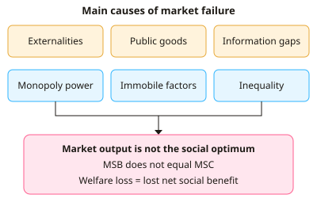

A-level Economics Year 12 · Topic 6
Market failure
This topic explains the different ways that free markets can fail to allocate resources efficiently.
We will look at welfare loss, externalities, public goods, merit and demerit goods, and information failure.
Then we cover common access resources and sustainability, and other failures like factor immobility, unstable commodity prices and inequality.
- 7 subtopics
- 274 questions
- Free: 6.1 notes and 10 questions
In this topic
- 6.1Types of market failure and welfare lossFree below · 41 questions
- 6.2Externalities: negative and positive externalities in production and consumptionOpen in Full Marks · 28 questions
- 6.3Public goods, quasi-public goods and the free-rider problemOpen in Full Marks · 32 questions
- 6.4Merit and demerit goodsOpen in Full Marks · 27 questions
- 6.5Information failure and asymmetric informationOpen in Full Marks · 33 questions
- 6.6Common access resources, the tragedy of the commons and environmental sustainabilityOpen in Full Marks · 29 questions
- 6.7Other market failures: factor immobility, unstable commodity markets, inequity and market powerOpen in Full Marks · 84 questions
6.1 · Free notes
Types of market failure and welfare loss

Key points
- Market failure occurs when the free market fails to allocate resources efficiently, so social welfare is not maximised. The result is allocative inefficiency: output differs from the socially optimal level.
- Complete market failure means the market does not exist at all, e.g. public goods. Partial market failure means the market exists but produces the wrong quantity or price, e.g. goods with externalities, merit goods and demerit goods.
- The main causes are externalities, public goods and the free-rider problem, information failure (asymmetric information), monopoly power, immobility of factors of production, and inequality of income and wealth.
- Allocative efficiency is achieved where marginal social benefit = marginal social cost (MSB = MSC). This is the social optimum, where social surplus (net social benefit) is maximised.
- Consumer surplus is the difference between what consumers are willing to pay and the price they pay. Producer surplus is the difference between the price received and the minimum price producers would accept. Social surplus = consumer surplus + producer surplus (adjusted for externalities).
- Welfare loss (deadweight loss) is the net social benefit lost when output is not at the social optimum. It is shown as a triangle between the MSB and MSC curves, from the social optimum to the market output.
- Overprovision occurs where MSC > MSB at the market output, e.g. negative externalities and demerit goods. Underprovision occurs where MSB > MSC, e.g. positive externalities, merit goods and public goods.
- MSC = MPC + external cost and MSB = MPB + external benefit. Private decision-makers ignore the external element, so the market equilibrium (MPB = MPC) differs from the social optimum.
- Information failure (e.g. consumers underestimating the harm of smoking or vaping, or asymmetric information between buyer and seller) leads to wrong consumption decisions. Classing goods as merit or demerit involves a value judgement.
- Immobility of factors (occupational and geographical) causes structural unemployment and wasted resources. Monopoly power causes higher prices and lower output than in competitive markets. Both cause allocative inefficiency.
- Calculating welfare loss: area of the triangle = ½ × base (Qm − Q*) × height (gap between MSC and MSB at Qm). Units are £. In exams, label axes, mark Qm and Q*, and shade the welfare loss.
- Evaluation: intervention is justified only if the welfare gain exceeds its costs. Government failure (poor information, administration costs, unintended consequences) can make things worse, so policy should be judged against the market outcome.
In more detail
- Worked welfare loss: market output 1,000 units, social optimum 800, and the gap between MSC and MSB at 1,000 units is £30 → welfare loss = ½ × 200 × 30 = £3,000.
- Complete vs partial failure: street lighting is a complete failure (the market may not provide it at all); cigarettes are a partial failure (the market exists but produces too much).
- Real example: air pollution costs the UK billions of pounds a year in health costs and lost productivity, a cost that is not reflected in fuel prices.
- Exam tip: identify who is affected, why the market gets it wrong (prices leave out some costs or benefits) and what the misallocation is.
Practice
Types of market failure and welfare loss: 10 questions
Pick an answer to check it, or open the answer for the explanation.
1. Which statement best defines market failure?
- When the government intervenes and makes the market worse
- When a free market allocates resources inefficiently, reducing social welfare
- When firms make a loss and leave the market
- When prices rise because demand exceeds supply
Show answer
B: When a free market allocates resources inefficiently, reducing social welfare. Market failure is when the free market misallocates resources, so social welfare is below its potential. Government failure and loss-making are different ideas.
2. Which is an example of complete market failure?
- A monopoly charging high prices
- No private firm supplies street lighting
- Underconsumption of education
- Overconsumption of cigarettes
Show answer
B: No private firm supplies street lighting. Complete failure means the market is missing. Free-riding makes street lighting unprofitable for private firms. The other examples are partial failures where a market exists.
3. A free market produces 500 units; the social optimum is 400. At 500 units MSC exceeds MSB by £8 and the gap is zero at 400. Welfare loss (linear curves)?
- £400
- £3,200
- £4,000
- £800
Show answer
A: £400. Welfare loss is a triangle: ½ × (500 − 400) × £8 = £400.
4. At the socially optimal level of output, which condition holds?
- MPB = MPC only
- MSB = MSC
- Price = average revenue
- Consumer surplus = producer surplus
Show answer
B: MSB = MSC. Allocative efficiency in social terms occurs where marginal social benefit equals marginal social cost, maximising net social benefit.
5. Teenagers underestimate the long-term health risks of vaping. Which cause of market failure is this?
- Public good free-riding
- Immobility of labour
- Monopoly power
- Information failure
Show answer
D: Information failure. Consumers lack full or accurate information about the harm, so they make poor decisions. This is information failure, which leads to over-consumption of demerit goods.
6. At the free-market output, MSB is greater than MSC. What does this indicate?
- Overproduction
- Productive inefficiency
- Underprovision, so welfare is lost
- Allocative efficiency
Show answer
C: Underprovision, so welfare is lost. If MSB > MSC, society gains from producing more. The market output is too low, so welfare is lost through underprovision.
7. A factory closes and ex-workers cannot find jobs because they lack new skills and cannot afford to move. Which market failure is this?
- Public good provision
- Externality
- Immobility of factors of production
- Information gap
Show answer
C: Immobility of factors of production. Occupational immobility (lack of skills) and geographical immobility (housing costs) stop labour moving to where it is needed, causing structural unemployment.
8. Output is 200 units in the free market and 150 at the social optimum. Each unit has a constant external cost of £3. What is the welfare loss?
- £150
- £450
- £600
- £75
Show answer
D: £75. The gap between MSC and MPB at 200 units is £3. Welfare loss = ½ × 50 × £3 = £75.
9. Which statement about welfare loss is correct?
- It exists only when prices are falling
- It is the net social benefit lost by producing the wrong quantity
- It equals the tax revenue the government loses
- It is the fall in a firm's profit
Show answer
B: It is the net social benefit lost by producing the wrong quantity. Welfare loss (deadweight loss) is the reduction in social surplus caused by output differing from the social optimum.
10. Consumer surplus is best defined as:
- The difference between what consumers would pay and the price actually paid
- Total revenue minus total cost
- The difference between price and the minimum price producers accept
- Price minus marginal cost
Show answer
A: The difference between what consumers would pay and the price actually paid. Consumer surplus is willingness to pay minus price paid. The last option describes producer surplus.
Keep going in Full Marks
Full Marks has 41 questions on Types of market failure and welfare loss (31 more than here), set out in practice levels. You also get notes and 3D models for all 7 subtopics of Market failure, plus games, timed exams and past papers.